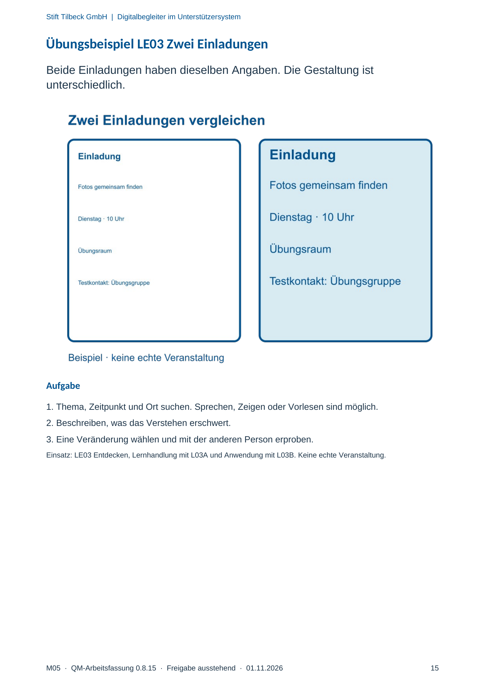

M05 · Originalseite 15
Übungsbeispiel LE03 Zwei Einladungen
Gezielte Original-Druckauswahl.
Fragen und Ankreuzfelder werden auf dem Ausdruck bearbeitet. Die Lesefassung speichert keine Antworten.
Lesefassung · Seite 15
Stift Tilbeck GmbH | Digitalbegleiter im Unterstützersystem
M05 · QM-Arbeitsfassung 0.8.15 · Freigabe ausstehend · 01.11.2026 15
Übungsbeispiel LE03 Zwei Einladungen
Beide Einladungen haben dieselben Angaben. Die Gestaltung ist
unterschiedlich.
Aufgabe
1. Thema, Zeitpunkt und Ort suchen. Sprechen, Zeigen oder Vorlesen sind möglich.
2. Beschreiben, was das Verstehen erschwert.
3. Eine Veränderung wählen und mit der anderen Person erproben.
Einsatz: LE03 Entdecken, Lernhandlung mit L03A und Anwendung mit L03B. Keine echte Veranstaltung.
Originalseite ansehen
